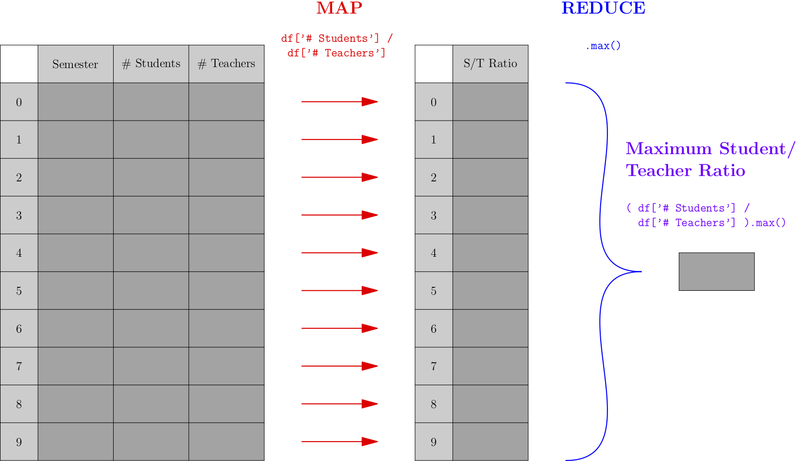
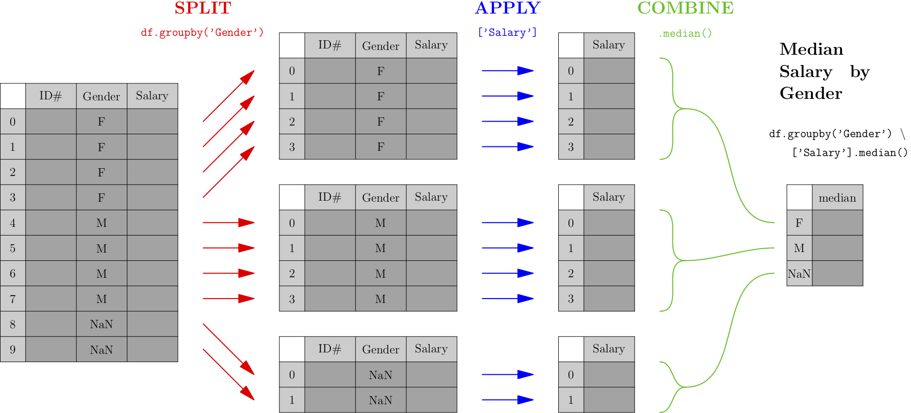
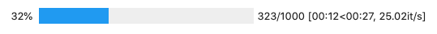

Processing the Rows of a DataFrame¶
See also the slides that summarize a portion of this content.
Goal¶
Back in the early days of programming, when I was a kid, we wrote code with stone tools.

And when we wanted to work with all the elements of an array, we had no choice but to write a loop.
shipments_received = [ 6, 9, 3, 4, 0, 0, 10, 4, 7, 6, 6, 0, 0, 13 ]
total = 0
for num_received in shipments_received:
total += num_received
total
68
Most introductory programming courses teach loops, and for good reason; they show up a lot in programming! But there are a few reasons we’ll try to avoid loops in data work whenever we can.
The lesser reason is readability. Loops are always at least two lines of code in Python; the one above is three because it has to initialize the total variable to zero. Many alternatives to loops can be done in just one line of code, which is more readable.
The more important reason is speed. Loops in Python are not very efficient, and this can be a serious problem. In the final project for MA346 in Spring 2020, many students came to my office hours with a loop that had been running for hours, and they didn’t know if or when it would finish. There are many ways to speed loops up, sometimes by just altering the loop, but usually by replacing the loop with something else entirely.
In fact, that’s the purpose of this chapter: What can I do to improve a slow loop?
The title of the chapter mentions DataFrames specifically, because in data work we’re almost always processing a DataFrame row-by-row. But many of the techniques we’ll cover apply to many different kinds of loops, with or without DataFrames.
An added benefit is that improving (or replacing) loops with something faster often means writing shorter or clearer code as well, achieving improvements in readability at the same time.
The apply() function¶
The most common use of a loop is when we need to do the same thing to each element of a sequence of values. Let’s see an example.
Baseball example¶
In an earlier homework assignment, I provided a cleaned dataset of baseball players’ salaries. Let’s take a look at the original version of the dataset when I downloaded it from the web, before it was cleaned.
import pandas as pd
df = pd.read_csv( '_static/baseball-salaries.csv' )
df.head()
| salary | name | total_value | pos | years | avg_annual | team | |
|---|---|---|---|---|---|---|---|
| 0 | $ 3,800,000 | Darryl Strawberry | $ 3,800,000 | OF | 1 (1991) | $ 3,800,000 | LAD |
| 1 | $ 3,750,000 | Kevin Mitchell | $ 3,750,000 | OF | 1 (1991) | $ 3,750,000 | SF |
| 2 | $ 3,750,000 | Will Clark | $ 3,750,000 | 1B | 1 (1991) | $ 3,750,000 | SF |
| 3 | $ 3,625,000 | Mark Davis | $ 3,625,000 | P | 1 (1991) | $ 3,625,000 | KC |
| 4 | $ 3,600,000 | Eric Davis | $ 3,600,000 | OF | 1 (1991) | $ 3,600,000 | CIN |
The “years” column looks particularly annoying. Why does it say “1 (1991)” instead of just 1991? Let’s take a look at some other rows…
df.iloc[14440:14445,:]
| salary | name | total_value | pos | years | avg_annual | team | |
|---|---|---|---|---|---|---|---|
| 14440 | $ 100,000 | Steve Monson | $ 100,000 | P | 1 (1990) | $ 100,000 | MIL |
| 14441 | $ 28,000,000 | Alex Rodriguez | $ 275,000,000 | DH | 10 (2008-17) | $ 27,500,000 | NYY |
| 14442 | $ 200,000 | Mike Colangelo | $ 200,000 | OF | 1 (1999) | $ 200,000 | LAA |
| 14443 | $ 200,000 | Mike Jerzembeck | $ 200,000 | P | 1 (1999) | $ 200,000 | NYY |
| 14444 | $ 21,680,727 | Alex Rodriguez | $ 21,680,727 | 3B | 1 (2006) | $ 21,680,727 | NYY |
Aha, some entries in the “years” column represent multiple years. We might naturally want to split that column up into three columns: number of years, first year, and last year. Each is a little project all on its own, but we just want to look at one example, so let’s consider just the task of extracting the first year from the text. If we wrote a loop, it might go something like this.
Using a loop¶
first_years = [ ]
for text in df['years']:
if text[1] == ' ': # one-digit number of years
first_years.append( int( text[3:7] ) )
else: # two-digit number of years
first_years.append( int( text[4:8] ) )
df['first_year'] = first_years
df.iloc[[0,14441],:] # quick spot check of our work
| salary | name | total_value | pos | years | avg_annual | team | first_year | |
|---|---|---|---|---|---|---|---|---|
| 0 | $ 3,800,000 | Darryl Strawberry | $ 3,800,000 | OF | 1 (1991) | $ 3,800,000 | LAD | 1991 |
| 14441 | $ 28,000,000 | Alex Rodriguez | $ 275,000,000 | DH | 10 (2008-17) | $ 27,500,000 | NYY | 2008 |
A loop over a list of values is what pandas’ apply() function was made for. You write df['column'].apply(f) to apply the function f to every entry in the chosen column. For example, we could simplify our work above as follows. The differences are noted in the comments.
Using apply()¶
# No need to start with an empty list.
def get_first_year ( text ): # Function name helps explain the code.
if text[1] == ' ':
return int( text[3:7] ) # Clearer and shorter than append().
else:
return int( text[4:8] ) # Clearer and shorter than append().
df['first_year'] = df['years'].apply( get_first_year )
df.iloc[[0,14441],:] # same check as before
| salary | name | total_value | pos | years | avg_annual | team | first_year | |
|---|---|---|---|---|---|---|---|---|
| 0 | $ 3,800,000 | Darryl Strawberry | $ 3,800,000 | OF | 1 (1991) | $ 3,800,000 | LAD | 1991 |
| 14441 | $ 28,000,000 | Alex Rodriguez | $ 275,000,000 | DH | 10 (2008-17) | $ 27,500,000 | NYY | 2008 |
If we’re honest, the code didn’t get that much simpler. But apply() is especially nice if the function we want to write is a function that already exists. Here’s a silly example, but it illustrates the point.
df['name_length'] = df['name'].apply( len )
df.head()
| salary | name | total_value | pos | years | avg_annual | team | first_year | name_length | |
|---|---|---|---|---|---|---|---|---|---|
| 0 | $ 3,800,000 | Darryl Strawberry | $ 3,800,000 | OF | 1 (1991) | $ 3,800,000 | LAD | 1991 | 17 |
| 1 | $ 3,750,000 | Kevin Mitchell | $ 3,750,000 | OF | 1 (1991) | $ 3,750,000 | SF | 1991 | 14 |
| 2 | $ 3,750,000 | Will Clark | $ 3,750,000 | 1B | 1 (1991) | $ 3,750,000 | SF | 1991 | 10 |
| 3 | $ 3,625,000 | Mark Davis | $ 3,625,000 | P | 1 (1991) | $ 3,625,000 | KC | 1991 | 10 |
| 4 | $ 3,600,000 | Eric Davis | $ 3,600,000 | OF | 1 (1991) | $ 3,600,000 | CIN | 1991 | 10 |
Using apply() will run a little faster than writing your own loop, but unless the DataFrame is really huge, you probably won’t notice the difference, so speed is not a significant concern here. But switching to the apply() form sets us up nicely for a later speed improvement we’ll discuss further below.
Although it’s less often useful, you can use df.apply(f) to run f on each column of the DataFrame, or df.apply(f,axis=1) to run f on each row of the DataFrame.
There is, unfortunately, a related function map(). It behaves very similarly to apply(), with a few subtle differences. This is unfortunate because in computer programming more broadly, the concepts of “map” and “apply” are often used synonymously/interchangeably. So to have them behave almost the same (but slightly differently!) in pandas is unfortunate. Oh well. Here are the differences:
Feature |
|
|
|---|---|---|
You can use it on DataFrames, as in |
Yes |
No |
You can provide extra |
Yes |
No |
You can use a dictionary instead of |
No |
Yes |
You can ask it to skip NaNs |
No |
Yes |
Big Picture
In most programming contexts, including data work, if someone speaks of “mapping” or “applying” a function, they mean the same thing: Automatically running the function on each element of a list or series. The function for this is often called map() or apply(), as in pandas, but not always. In mathematics, it’s called using a function “elementwise,” meaning on each element of a structure separately. In the popular language Julia, it’s called “broadcasting” a function over an array or table.
The function that you give to apply() can’t be just any function. Its input type needs to match the data type of the individual elements in the Series or DataFrame you’re applying it to. Its output type will determine what kind of output you get. For example, the get_first_year() function defined above takes strings as input and gives integers as output. So using apply(get_first_year) will need to be done on a Series containing strings, and will produce a Series containing integers.
If you have a function that takes multiple inputs, you might want to bind some of the arguments so that it becomes a unary function and can be used in apply(). Or you can use the args or kwargs feature of apply(), but we won’t cover that in these course notes. You can see a small example in the pandas documentation. We will, however, take a look at the possibility of using a dictionary with map(), because it is extremely useful. We will consider a simple example application, but do a more sophisticated one in class.
Using map()¶
Let’s assume that the analysis we wanted to do cared only about whether the baseball player had an infield position (IF), outfield position (OF), was a pitcher (P), or a designated hitter (DH), and we didn’t care about any other details of the position (such as first base vs. second base, or starting pitcher vs. relief pitcher). We’d therefore like to simplify the “pos” column and convert all infield positions to IF, and so on. First, let’s see what all the positions are.
df['pos'].unique()
array(['OF', '1B', 'P', 'DH', '3B', '2B', 'C', 'SS', 'RF', 'SP', 'LF',
'CF', 'RP'], dtype=object)
We could convert them with a big if statement, like you see here, but this is tedious and repetitive code.
def simpler_position ( pos ): # BAD STYLE. See better version below.
if pos == 'P': return 'P'
if pos == 'SP': return 'P'
if pos == 'RP': return 'P'
if pos == 'C': return 'IF'
if pos == '1B': return 'IF'
if pos == '2B': return 'IF'
if pos == '3B': return 'IF'
if pos == 'SS': return 'IF'
if pos == 'OF': return 'OF'
if pos == 'LF': return 'OF'
if pos == 'CF': return 'OF'
if pos == 'RF': return 'OF'
if pos == 'DH': return 'DH'
df['simple_pos'] = df['pos'].apply( simpler_position )
df.head()
| salary | name | total_value | pos | years | avg_annual | team | first_year | name_length | simple_pos | |
|---|---|---|---|---|---|---|---|---|---|---|
| 0 | $ 3,800,000 | Darryl Strawberry | $ 3,800,000 | OF | 1 (1991) | $ 3,800,000 | LAD | 1991 | 17 | OF |
| 1 | $ 3,750,000 | Kevin Mitchell | $ 3,750,000 | OF | 1 (1991) | $ 3,750,000 | SF | 1991 | 14 | OF |
| 2 | $ 3,750,000 | Will Clark | $ 3,750,000 | 1B | 1 (1991) | $ 3,750,000 | SF | 1991 | 10 | IF |
| 3 | $ 3,625,000 | Mark Davis | $ 3,625,000 | P | 1 (1991) | $ 3,625,000 | KC | 1991 | 10 | P |
| 4 | $ 3,600,000 | Eric Davis | $ 3,600,000 | OF | 1 (1991) | $ 3,600,000 | CIN | 1991 | 10 | OF |
All the repetitive code is just establishing a simple relationship among some very short strings. We could store that same relationship in a dictionary with many fewer lines of code. Note that we must use map(), because apply() doesn’t accept dictionaries.
df['simple_pos'] = df['pos'].map( {
'P': 'P', 'SP': 'P', 'RP': 'P', 'C': 'IF',
'1B': 'IF', '2B': 'IF', '3B': 'IF', 'SS': 'IF',
'OF': 'OF', 'LF': 'OF', 'CF': 'OF', 'RF': 'OF', 'DH': 'DH'
} )
df.head()
| salary | name | total_value | pos | years | avg_annual | team | first_year | name_length | simple_pos | |
|---|---|---|---|---|---|---|---|---|---|---|
| 0 | $ 3,800,000 | Darryl Strawberry | $ 3,800,000 | OF | 1 (1991) | $ 3,800,000 | LAD | 1991 | 17 | OF |
| 1 | $ 3,750,000 | Kevin Mitchell | $ 3,750,000 | OF | 1 (1991) | $ 3,750,000 | SF | 1991 | 14 | OF |
| 2 | $ 3,750,000 | Will Clark | $ 3,750,000 | 1B | 1 (1991) | $ 3,750,000 | SF | 1991 | 10 | IF |
| 3 | $ 3,625,000 | Mark Davis | $ 3,625,000 | P | 1 (1991) | $ 3,625,000 | KC | 1991 | 10 | P |
| 4 | $ 3,600,000 | Eric Davis | $ 3,600,000 | OF | 1 (1991) | $ 3,600,000 | CIN | 1991 | 10 | OF |
In class, we will do a more complex example of applying a dictionary using map(). Before class, you may want to glance back at Exercise 3 from the Chapter 2 notes, which shows you how to take two columns of a DataFrame representing a mathematical function and convert them into a dictionary for use in situations just like this one. And be sure to complete the homework about the NPR dataset before class as well, because we will use that in our example!
Parallel apply()¶
I mentioned earlier that converting a loop into an apply() or map() call doesn’t gain us much speed. But it does make it easy for us to add a nice speed improvement. There’s a Python package called swifter that you can install using the instructions on that page. Once it’s installed, you can convert any code like df['column'].apply(f) easily into a faster version by replacing it with df['column'].swifter.apply(f). That’s all!
Under the hood, swifter is trying a variety of speedup mechanisms (many of which we discuss in this chapter) and deciding which of them works best for your situation. The most common one for large dataset is probably parallel processing. This means that if your computer has more than one processor core (which most modern laptops do), then it can process more than one entry of the data at once, each on a separate core.
Without swifter, you could accomplish the same thing with code like the following. (In fact, if you have trouble installing swifter, you can use this code instead.)
# Use Python's built-in multiprocessing module to find your number of cores.
import multiprocessing as mp
n_cores = mp.cpu_count()
# Create a "pool" of functions that can work at the same time and run them.
pool = mp.Pool( n_cores )
df['simple_pos'] = pool.map( simpler_position, df['pos'], n_cores )
# Clean up afterwards.
pool.close()
pool.join()
# See result.
df.head()
| salary | name | total_value | pos | years | avg_annual | team | first_year | name_length | simple_pos | |
|---|---|---|---|---|---|---|---|---|---|---|
| 0 | $ 3,800,000 | Darryl Strawberry | $ 3,800,000 | OF | 1 (1991) | $ 3,800,000 | LAD | 1991 | 17 | OF |
| 1 | $ 3,750,000 | Kevin Mitchell | $ 3,750,000 | OF | 1 (1991) | $ 3,750,000 | SF | 1991 | 14 | OF |
| 2 | $ 3,750,000 | Will Clark | $ 3,750,000 | 1B | 1 (1991) | $ 3,750,000 | SF | 1991 | 10 | IF |
| 3 | $ 3,625,000 | Mark Davis | $ 3,625,000 | P | 1 (1991) | $ 3,625,000 | KC | 1991 | 10 | P |
| 4 | $ 3,600,000 | Eric Davis | $ 3,600,000 | OF | 1 (1991) | $ 3,600,000 | CIN | 1991 | 10 | OF |
Map-Reduce¶
Big Picture
Both map-reduce and split-apply-combine are data manipulation buzzwords that you’ll want to be familiar with, for
thinking about your own data manipulation work,
discussing that work with coworkers, and
knowing what people are saying in, e.g., interviews.
This section covers map-reduce and the next section covers split-apply-combine.
A map-reduce process is one that takes any list, maps a specific function across all entries of the list, then reduces those outputs down to a single, smaller result. Consider the following picture, which shows a very simple map-reduce operation that takes a DataFrame about historic revenue numbers and computes the lowest revenue across all quarters.

Let’s actually do the above computation on some small sample (fictional) data:
# setup - example tiny dataset
rev_quarters = pd.DataFrame( {
'Year' : [ 2010, 2010, 2010, 2010, 2011, 2011, 2011, 2011, 2012, 2012 ],
'Quarter' : [ 1, 2, 3, 4, 1, 2, 3, 4, 1, 2 ],
'Revenue' : [ 177, 186, 167, 263, 180, 193, 189, 281, 201, 210 ]
} )
rev_quarters
| Year | Quarter | Revenue | |
|---|---|---|---|
| 0 | 2010 | 1 | 177 |
| 1 | 2010 | 2 | 186 |
| 2 | 2010 | 3 | 167 |
| 3 | 2010 | 4 | 263 |
| 4 | 2011 | 1 | 180 |
| 5 | 2011 | 2 | 193 |
| 6 | 2011 | 3 | 189 |
| 7 | 2011 | 4 | 281 |
| 8 | 2012 | 1 | 201 |
| 9 | 2012 | 2 | 210 |
# map-reduce work, one line:
rev_quarters['Revenue'].min()
167
As mentioned earlier, “map” is a synonym for “apply,” so the first step of the process applies the same operation to all rows of the DataFrame; in this case, that operation extracts the revenue from the row. The “reduce” operation in this case is a simple min() operation, but it can be something more complex.
So a map-reduce operation involves two functions, the first performing a map() operation (as discussed earlier), and the second doing something new. The function used for the reducing step must be something that takes an entire list or series as input and produces a single value as output. The min() operation was used in the example above, but other operations are common, such as max(), sum(), len(), mean(), median(), and more.
Argmin and argmax¶
A very common function that shows up in statistics is called argmin (and its companion argmax). These are also implemented in pandas and are very useful in map-reduce situations. In the example above, let’s say we didn’t want to know the minimum revenue, but we wanted to know in which quarter the minimum revenue happened. We can replace min in the above code with argmin to ask that question.
rev_quarters['Revenue'].argmin()
2
The argmin function is short for “the argument that yields the minimum,” or in other words, what value would I need to supply as input to the map function to get the minimum output? In this case, the map function takes each row and extracts its revenue, so we’re asking pandas, “When you found the minimum revenue, which row was the input?” The answer was row 2, and we can see that it’s the correct row as follows.
rev_quarters.iloc[2]
Year 2010
Quarter 3
Revenue 167
Name: 2, dtype: int64
While the pandas documentation for argmin and argmax suggest that they return multiple values in the case of ties, this doesn’t seem to be true. They seem to return the first index only. You can therefore always rely on the result of argmin/argmax being a single value, never a list or series. If you want the indices of all max/min entries, you will need to compute it another way.
Map-reduce example: sample standard deviation¶
The formula for the standard deviation of a sample of data should be familiar you to from GB213.
Let’s assume we’ve already computed the mean value \(\bar x\). Then computing the standard deviation is actually a map-reduce operation. The map function takes each \(x_i\) as input and computes \((x_i-\bar x)^2\) as output. The reduce operation then does a sum, divides by \(n-1\), and takes a square root. We could code it like so:
import numpy as np
example_data = df['first_year']
x_bar = example_data.mean()
def map_func ( x ):
return ( x - x_bar ) ** 2
def reduce_func ( data ):
return np.sqrt( data.sum() / ( len(data) - 1 ) )
reduce_func( example_data.map( map_func ) )
7.926156939014573
Of course, we didn’t have to code that. There’s already an existing standard deviation function built into pandas, and it gives almost exactly the same answer. (I suspect theirs does something more careful with tiny issues of accuracy than my simple example does.)
example_data.std()
7.926156939014146
But it is still important to notice that the pattern in computing a sample standard deviation is a map-reduce pattern, because we cannot always rely on pandas to do computations for us. For instance, if the data we were dealing with were many gigabytes spread over a database, we couldn’t load it all into a pandas DataFrame in memory and then call data.std() to get our answer.
There are specialized tools in the industry for applying the map-reduce paradigm to databases (even if the database is enormous and spread over many different servers). One famous example is Apache Spark, but there are many.
Many more examples of map-reduce from math and statistics could have been shown instead of the one above. Any time a list of values collapses to give a single result, map-reduce is behind it. This happens for summations, approximations of integrals (e.g., trapezoidal rule), expected values, matrix multiplication, computing probabilities from trees of possible outcomes, any weighted averages (chemical concentrations, portfolio values, etc.), and many more.
Split-Apply-Combine¶
Data scientist and R developer Hadley Wickham seems to coin lots of important phrases. Recall from the Chapter 5 notes that he introduced the phrase “tidy data.” He also introduced the phrase “split, apply, combine,” in this paper.
It is another extremely common operation done on DataFrames, and it is closely related to map-reduce, as we will see below.
Let’s say you were concerned about pay equity, and wanted to compute the median salary across your organization, by gender, to get a sense of whether there were any important discrepancies. The computation would look something like the following. (We assume that the gender column contains either M for male, F for female, or a missing value for those who do not wish to classify.)

As you can see from the picture, the first phase (called “split”) breaks the data into groups by the categorical variable we care about–in this case, gender. After that, each smaller DataFrame undergoes a map-reduce process, and the results of each small map-reduce get aggregated into a result, indexed by the original categorical variable.
Note that the output type of the split operation (which, in pandas, is a df.groupby() call) is NOT a DataFrame, but rather a collection of DataFrames. It is essential to follow a df.groupby() call with the apply and combine steps of the process, so that the result is a familiar and usable type of object again–a pandas DataFrame.
The easiest type of split-apply-combine is shown in the picture above and can be done with a single line of code. We’ll compute minimum revenue by year with the DataFrame from our map-reduce example.
rev_quarters.groupby('Year')['Revenue'].min()
Year
2010 167
2011 180
2012 201
Name: Revenue, dtype: int64
Split-apply-combine is actually a specific type of pivot table. Thus split-apply-combine operations can be done on data in Excel as well, using its pivot table features. We can even use df.pivot_table() to mimic the above procedure, as follows. (Because we don’t need data separated into separate columns, we don’t provide a columns variable.)
rev_quarters.pivot_table( index=['Year'], columns=[], values='Revenue', aggfunc='min' )
| Revenue | |
|---|---|
| Year | |
| 2010 | 167 |
| 2011 | 180 |
| 2012 | 201 |
More on math in Python¶
Arithmetic in formulas¶
Recall that pandas is built on NumPy, and in Chapter 9 of the notes we talked about NumPy’s support for vectorization. If we have a Series height containing heights in inches and we need instead to have it in centimeters, we don’t need to do height.apply() and give it a conversion function, because we can just do height * 2.54. NumPy automatically vectorizes this operation, spreading the “times 2.54” over each entry in the height array.
This is quite natural, because we have mathematical notation that does the same thing (in math, not Python). If you’ve taken a class involving vectors, you know that vector addition \(\vec x+\vec y\) means to do exactly what NumPy does–add the corresponding entries in each vector. Similarly, scalar multiplication \(s\vec x\) means to multiply \(s\) by each entry in the vector \(\vec x\), just like height * 2.54 does in Python. So NumPy is not inventing something strange here; it’s normal mathematical stuff.
All the basic mathematical operations are built into NumPy. For example, if we have created a linear model \(\hat y=\beta_0+\beta_1 x\) with parameters stored in Python variables β0 and β1, we can apply it to an entire series of inputs xs at once with the following code, because NumPy knows how to spread both + and * across arrays.
y_hat = β0 + β1 * xs
In fact, if we had actual ys that went with the xs, we could then compute a list of residuals all at once with y_hat - ys, or even compute the RMSE (root mean squared error) with code like this.
np.sqrt( np.sum( ( y_hat - ys ) ** 2 ) / len( ys ) )
The subtraction with - and the squaring with ** 2 would all be spread across arrays of inputs correctly, because NumPy comes with code to support doing so.
Conditionals with np.where()¶
This removes a lot of the need for both loops and apply()/map() calls, but not all. One of the first things that makes us think we might need a loop is when a conditional computation needs to be done. For instance, let’s say we were given a dataset like the following (made up) example.
patients = pd.DataFrame( {
'id' : [ 100615, 51, 100616, 83, 100607, 100618, 19, 65 ],
'height' : [ 72, 158, 75, 173, 68, 67, 163, 178 ],
'dose' : [ 2, 0, 2.5, 2, 0, 2, 2.5, 0 ]
} )
patients
| id | height | dose | |
|---|---|---|---|
| 0 | 100615 | 72 | 2.0 |
| 1 | 51 | 158 | 0.0 |
| 2 | 100616 | 75 | 2.5 |
| 3 | 83 | 173 | 2.0 |
| 4 | 100607 | 68 | 0.0 |
| 5 | 100618 | 67 | 2.0 |
| 6 | 19 | 163 | 2.5 |
| 7 | 65 | 178 | 0.0 |
Let’s imagine that we then found out that it was the result of merging data from two different studies, one done in the U.S. and one done in France. The data with IDs that begin with 100 are from the U.S. study, where heights were measured in inches. The data with two-digit IDs are from the French study, where heights were measured in cm. We need to standardize the units.
We can’t simply convert to cm with patients['height'] * 2.54 because that would apply the conversion to all data rather than just the measurements in inches. We need some conditional logic, perhaps using an if statement, to be selective. Our first inclination might be a loop.
# before changing the contents, make a backup, for use later.
backup = patients.copy()
# solving the problem with a loop:
for index,row in patients.iterrows():
if row['id'] > 100000: # US data
patients.loc[index,'height'] *= 2.54
patients
| id | height | dose | |
|---|---|---|---|
| 0 | 100615 | 182.88 | 2.0 |
| 1 | 51 | 158.00 | 0.0 |
| 2 | 100616 | 190.50 | 2.5 |
| 3 | 83 | 173.00 | 2.0 |
| 4 | 100607 | 172.72 | 0.0 |
| 5 | 100618 | 170.18 | 2.0 |
| 6 | 19 | 163.00 | 2.5 |
| 7 | 65 | 178.00 | 0.0 |
Note that row['height'] *= 2.54 actually wouldn’t alter the DataFrame, so we’re forced to use patients.loc[] instead.
But if you were trying to follow the advice in this chapter of the notes, you might switch to an apply() function instead. The trouble is, it’s a bit annoying to do, because we need the if to operate on the “id” column and the conversion to operate on the “height” column, so which one do we call apply() on? We can call apply() on the whole DataFrame, but the loop is actually simpler in that case!
The solution here is to use NumPy’s np.where() function. It lets you select just which rows should get which type of computation, like so:
# restore the original data:
patients = backup.copy()
# solution with np.where():
patients['height'] = np.where( patients['id'] > 100000, patients['height'] * 2.54, patients['height'] )
patients
| id | height | dose | |
|---|---|---|---|
| 0 | 100615 | 182.88 | 2.0 |
| 1 | 51 | 158.00 | 0.0 |
| 2 | 100616 | 190.50 | 2.5 |
| 3 | 83 | 173.00 | 2.0 |
| 4 | 100607 | 172.72 | 0.0 |
| 5 | 100618 | 170.18 | 2.0 |
| 6 | 19 | 163.00 | 2.5 |
| 7 | 65 | 178.00 | 0.0 |
The np.where() function works just like =IF() does in Excel, taking three inputs, a conditional, an “if” result, and an “else” result. But the difference is that np.where() is vectorized, effectively doing an Excel =IF() on each entry in the Series separately. You can read an np.where() function just like a sentence:
Where patient id is over 100000, do patient height times 2.54, otherwise just keep the original height.
In summary, thanks to np.where(), even many conditional computations don’t require a loop or an apply; they can be done with NumPy vectorization as well.
Speeding up mathematics¶
There are also some very impressive tools for speeding up mathematical operations in NumPy a LOT. I will not cover them here, but will lest each of the following as an opportunity for Learning On Your Own. Note that these are relevant only if you have a very large dataset over which you need to do complex mathematical computations, so that you notice pandas behaving slowly, and thus you need a speed boost.
Learning on Your Own - CuPy (fastest option)
Doing certain types of computations can be sped up significantly by using graphics cards (originally designed for gaming rather than data science) instead of the computer’s CPU (which does all the non-graphics computations). See this blog post for information on CuPy, a Python library for harnessing your GPU to do fast arithmetic.
CuPy requires you to first describe to it the computation you’ll want to do quickly, and it will compile it into GPU-friendly code that you can then use. This is an extra level of annoyance for the programmer, but often produces the fastest results.
Learning on Your Own - NumExpr (easiest option)
If you’ve already got some code that does the arithmetic operation you want on NumPy arrays (or pandas Series, which are also NumPy arrays), then it’s pretty easy to convert that code to use NumExpr. It doesn’t give as big a speedup as CuPy, but it’s easier to set up. See this blog post for details, and note the connection to pd.eval().
Learning on Your Own - Cython (most flexible)
The previous two options work only for speeding up arithmetic. To speed up any operation (including string manipulation, working with dictionaries, sets, or any Python class), you’ll need Cython. This is a tool for converting Python code into C code automatically, without your having to learn to program in C. C code almost always runs significantly faster than Python code, but C is much less easy to use, especially for data work. See this tutorial on using Cython in Jupyter, plus the example below.
Let’s say I have the following function that computes \(n!\), the product of all positive integers up to \(n\). (This is not the best way to write this function, but it’s just an example.)
def factorial ( n ):
result = 1
for i in range( 1, n+1 ):
result *= i
return result
factorial( 5 )
120
I can ask Jupyter to compile this into C code for me, so that it runs faster, as follows.
# load the Cython extension
%load_ext cython
%%cython -a
# use Cython on the factorial function
def factorial ( n ):
result = 1
for i in range( 1, n+1 ):
result *= i
return result
Generated by Cython 0.29.17
Yellow lines hint at Python interaction.
Click on a line that starts with a "+" to see the C code that Cython generated for it.
1: # use Cython on the factorial function
+2: def factorial ( n ):
/* Python wrapper */
static PyObject *__pyx_pw_46_cython_magic_2dff6ac496b8d80bfdb9e8f0d7d14e23_1factorial(PyObject *__pyx_self, PyObject *__pyx_v_n); /*proto*/
static PyMethodDef __pyx_mdef_46_cython_magic_2dff6ac496b8d80bfdb9e8f0d7d14e23_1factorial = {"factorial", (PyCFunction)__pyx_pw_46_cython_magic_2dff6ac496b8d80bfdb9e8f0d7d14e23_1factorial, METH_O, 0};
static PyObject *__pyx_pw_46_cython_magic_2dff6ac496b8d80bfdb9e8f0d7d14e23_1factorial(PyObject *__pyx_self, PyObject *__pyx_v_n) {
PyObject *__pyx_r = 0;
__Pyx_RefNannyDeclarations
__Pyx_RefNannySetupContext("factorial (wrapper)", 0);
__pyx_r = __pyx_pf_46_cython_magic_2dff6ac496b8d80bfdb9e8f0d7d14e23_factorial(__pyx_self, ((PyObject *)__pyx_v_n));
/* function exit code */
__Pyx_RefNannyFinishContext();
return __pyx_r;
}
static PyObject *__pyx_pf_46_cython_magic_2dff6ac496b8d80bfdb9e8f0d7d14e23_factorial(CYTHON_UNUSED PyObject *__pyx_self, PyObject *__pyx_v_n) {
PyObject *__pyx_v_result = NULL;
PyObject *__pyx_v_i = NULL;
PyObject *__pyx_r = NULL;
__Pyx_RefNannyDeclarations
__Pyx_RefNannySetupContext("factorial", 0);
/* … */
/* function exit code */
__pyx_L1_error:;
__Pyx_XDECREF(__pyx_t_1);
__Pyx_XDECREF(__pyx_t_2);
__Pyx_AddTraceback("_cython_magic_2dff6ac496b8d80bfdb9e8f0d7d14e23.factorial", __pyx_clineno, __pyx_lineno, __pyx_filename);
__pyx_r = NULL;
__pyx_L0:;
__Pyx_XDECREF(__pyx_v_result);
__Pyx_XDECREF(__pyx_v_i);
__Pyx_XGIVEREF(__pyx_r);
__Pyx_RefNannyFinishContext();
return __pyx_r;
}
/* … */
__pyx_tuple_ = PyTuple_Pack(3, __pyx_n_s_n, __pyx_n_s_result, __pyx_n_s_i); if (unlikely(!__pyx_tuple_)) __PYX_ERR(0, 2, __pyx_L1_error)
__Pyx_GOTREF(__pyx_tuple_);
__Pyx_GIVEREF(__pyx_tuple_);
/* … */
__pyx_t_1 = PyCFunction_NewEx(&__pyx_mdef_46_cython_magic_2dff6ac496b8d80bfdb9e8f0d7d14e23_1factorial, NULL, __pyx_n_s_cython_magic_2dff6ac496b8d80bfd); if (unlikely(!__pyx_t_1)) __PYX_ERR(0, 2, __pyx_L1_error)
__Pyx_GOTREF(__pyx_t_1);
if (PyDict_SetItem(__pyx_d, __pyx_n_s_factorial, __pyx_t_1) < 0) __PYX_ERR(0, 2, __pyx_L1_error)
__Pyx_DECREF(__pyx_t_1); __pyx_t_1 = 0;
+3: result = 1
__Pyx_INCREF(__pyx_int_1);
__pyx_v_result = __pyx_int_1;
+4: for i in range( 1, n+1 ):
__pyx_t_1 = __Pyx_PyInt_AddObjC(__pyx_v_n, __pyx_int_1, 1, 0, 0); if (unlikely(!__pyx_t_1)) __PYX_ERR(0, 4, __pyx_L1_error) __Pyx_GOTREF(__pyx_t_1); __pyx_t_2 = PyTuple_New(2); if (unlikely(!__pyx_t_2)) __PYX_ERR(0, 4, __pyx_L1_error) __Pyx_GOTREF(__pyx_t_2); __Pyx_INCREF(__pyx_int_1); __Pyx_GIVEREF(__pyx_int_1); PyTuple_SET_ITEM(__pyx_t_2, 0, __pyx_int_1); __Pyx_GIVEREF(__pyx_t_1); PyTuple_SET_ITEM(__pyx_t_2, 1, __pyx_t_1); __pyx_t_1 = 0; __pyx_t_1 = __Pyx_PyObject_Call(__pyx_builtin_range, __pyx_t_2, NULL); if (unlikely(!__pyx_t_1)) __PYX_ERR(0, 4, __pyx_L1_error) __Pyx_GOTREF(__pyx_t_1); __Pyx_DECREF(__pyx_t_2); __pyx_t_2 = 0; if (likely(PyList_CheckExact(__pyx_t_1)) || PyTuple_CheckExact(__pyx_t_1)) { __pyx_t_2 = __pyx_t_1; __Pyx_INCREF(__pyx_t_2); __pyx_t_3 = 0; __pyx_t_4 = NULL; } else { __pyx_t_3 = -1; __pyx_t_2 = PyObject_GetIter(__pyx_t_1); if (unlikely(!__pyx_t_2)) __PYX_ERR(0, 4, __pyx_L1_error) __Pyx_GOTREF(__pyx_t_2); __pyx_t_4 = Py_TYPE(__pyx_t_2)->tp_iternext; if (unlikely(!__pyx_t_4)) __PYX_ERR(0, 4, __pyx_L1_error) } __Pyx_DECREF(__pyx_t_1); __pyx_t_1 = 0; for (;;) { if (likely(!__pyx_t_4)) { if (likely(PyList_CheckExact(__pyx_t_2))) { if (__pyx_t_3 >= PyList_GET_SIZE(__pyx_t_2)) break; #if CYTHON_ASSUME_SAFE_MACROS && !CYTHON_AVOID_BORROWED_REFS __pyx_t_1 = PyList_GET_ITEM(__pyx_t_2, __pyx_t_3); __Pyx_INCREF(__pyx_t_1); __pyx_t_3++; if (unlikely(0 < 0)) __PYX_ERR(0, 4, __pyx_L1_error) #else __pyx_t_1 = PySequence_ITEM(__pyx_t_2, __pyx_t_3); __pyx_t_3++; if (unlikely(!__pyx_t_1)) __PYX_ERR(0, 4, __pyx_L1_error) __Pyx_GOTREF(__pyx_t_1); #endif } else { if (__pyx_t_3 >= PyTuple_GET_SIZE(__pyx_t_2)) break; #if CYTHON_ASSUME_SAFE_MACROS && !CYTHON_AVOID_BORROWED_REFS __pyx_t_1 = PyTuple_GET_ITEM(__pyx_t_2, __pyx_t_3); __Pyx_INCREF(__pyx_t_1); __pyx_t_3++; if (unlikely(0 < 0)) __PYX_ERR(0, 4, __pyx_L1_error) #else __pyx_t_1 = PySequence_ITEM(__pyx_t_2, __pyx_t_3); __pyx_t_3++; if (unlikely(!__pyx_t_1)) __PYX_ERR(0, 4, __pyx_L1_error) __Pyx_GOTREF(__pyx_t_1); #endif } } else { __pyx_t_1 = __pyx_t_4(__pyx_t_2); if (unlikely(!__pyx_t_1)) { PyObject* exc_type = PyErr_Occurred(); if (exc_type) { if (likely(__Pyx_PyErr_GivenExceptionMatches(exc_type, PyExc_StopIteration))) PyErr_Clear(); else __PYX_ERR(0, 4, __pyx_L1_error) } break; } __Pyx_GOTREF(__pyx_t_1); } __Pyx_XDECREF_SET(__pyx_v_i, __pyx_t_1); __pyx_t_1 = 0; /* … */ } __Pyx_DECREF(__pyx_t_2); __pyx_t_2 = 0;
+5: result *= i
__pyx_t_1 = PyNumber_InPlaceMultiply(__pyx_v_result, __pyx_v_i); if (unlikely(!__pyx_t_1)) __PYX_ERR(0, 5, __pyx_L1_error) __Pyx_GOTREF(__pyx_t_1); __Pyx_DECREF_SET(__pyx_v_result, __pyx_t_1); __pyx_t_1 = 0;
+6: return result
__Pyx_XDECREF(__pyx_r); __Pyx_INCREF(__pyx_v_result); __pyx_r = __pyx_v_result; goto __pyx_L0;
This output highlights in yellow code that was probably not sped up much by Cython. Yuck, that doesn’t seem to have helped much at all! But we can help it significantly by giving it some hints as to what we’re doing. If we tell it that all the variables involved are integers, that helps it speed up the code more.
%%cython -a
def factorial ( int n ): # n is an integer
cdef int result, i # so are result and i
result = 1
for i in range( 1, n+1 ):
result *= i
return result
Generated by Cython 0.29.17
Yellow lines hint at Python interaction.
Click on a line that starts with a "+" to see the C code that Cython generated for it.
+1: def factorial ( int n ): # n is an integer
/* Python wrapper */
static PyObject *__pyx_pw_46_cython_magic_d5e775e6f487056afbda12e0af40a798_1factorial(PyObject *__pyx_self, PyObject *__pyx_arg_n); /*proto*/
static PyMethodDef __pyx_mdef_46_cython_magic_d5e775e6f487056afbda12e0af40a798_1factorial = {"factorial", (PyCFunction)__pyx_pw_46_cython_magic_d5e775e6f487056afbda12e0af40a798_1factorial, METH_O, 0};
static PyObject *__pyx_pw_46_cython_magic_d5e775e6f487056afbda12e0af40a798_1factorial(PyObject *__pyx_self, PyObject *__pyx_arg_n) {
int __pyx_v_n;
PyObject *__pyx_r = 0;
__Pyx_RefNannyDeclarations
__Pyx_RefNannySetupContext("factorial (wrapper)", 0);
assert(__pyx_arg_n); {
__pyx_v_n = __Pyx_PyInt_As_int(__pyx_arg_n); if (unlikely((__pyx_v_n == (int)-1) && PyErr_Occurred())) __PYX_ERR(0, 1, __pyx_L3_error)
}
goto __pyx_L4_argument_unpacking_done;
__pyx_L3_error:;
__Pyx_AddTraceback("_cython_magic_d5e775e6f487056afbda12e0af40a798.factorial", __pyx_clineno, __pyx_lineno, __pyx_filename);
__Pyx_RefNannyFinishContext();
return NULL;
__pyx_L4_argument_unpacking_done:;
__pyx_r = __pyx_pf_46_cython_magic_d5e775e6f487056afbda12e0af40a798_factorial(__pyx_self, ((int)__pyx_v_n));
/* function exit code */
__Pyx_RefNannyFinishContext();
return __pyx_r;
}
static PyObject *__pyx_pf_46_cython_magic_d5e775e6f487056afbda12e0af40a798_factorial(CYTHON_UNUSED PyObject *__pyx_self, int __pyx_v_n) {
int __pyx_v_result;
int __pyx_v_i;
PyObject *__pyx_r = NULL;
__Pyx_RefNannyDeclarations
__Pyx_RefNannySetupContext("factorial", 0);
/* … */
/* function exit code */
__pyx_L1_error:;
__Pyx_XDECREF(__pyx_t_4);
__Pyx_AddTraceback("_cython_magic_d5e775e6f487056afbda12e0af40a798.factorial", __pyx_clineno, __pyx_lineno, __pyx_filename);
__pyx_r = NULL;
__pyx_L0:;
__Pyx_XGIVEREF(__pyx_r);
__Pyx_RefNannyFinishContext();
return __pyx_r;
}
/* … */
__pyx_tuple_ = PyTuple_Pack(4, __pyx_n_s_n, __pyx_n_s_n, __pyx_n_s_result, __pyx_n_s_i); if (unlikely(!__pyx_tuple_)) __PYX_ERR(0, 1, __pyx_L1_error)
__Pyx_GOTREF(__pyx_tuple_);
__Pyx_GIVEREF(__pyx_tuple_);
/* … */
__pyx_t_1 = PyCFunction_NewEx(&__pyx_mdef_46_cython_magic_d5e775e6f487056afbda12e0af40a798_1factorial, NULL, __pyx_n_s_cython_magic_d5e775e6f487056afb); if (unlikely(!__pyx_t_1)) __PYX_ERR(0, 1, __pyx_L1_error)
__Pyx_GOTREF(__pyx_t_1);
if (PyDict_SetItem(__pyx_d, __pyx_n_s_factorial, __pyx_t_1) < 0) __PYX_ERR(0, 1, __pyx_L1_error)
__Pyx_DECREF(__pyx_t_1); __pyx_t_1 = 0;
2: cdef int result, i # so are result and i
+3: result = 1
__pyx_v_result = 1;
+4: for i in range( 1, n+1 ):
__pyx_t_1 = (__pyx_v_n + 1);
__pyx_t_2 = __pyx_t_1;
for (__pyx_t_3 = 1; __pyx_t_3 < __pyx_t_2; __pyx_t_3+=1) {
__pyx_v_i = __pyx_t_3;
+5: result *= i
__pyx_v_result = (__pyx_v_result * __pyx_v_i); }
+6: return result
__Pyx_XDECREF(__pyx_r); __pyx_t_4 = __Pyx_PyInt_From_int(__pyx_v_result); if (unlikely(!__pyx_t_4)) __PYX_ERR(0, 6, __pyx_L1_error) __Pyx_GOTREF(__pyx_t_4); __pyx_r = __pyx_t_4; __pyx_t_4 = 0; goto __pyx_L0;
That looks much better. Does it still work?
factorial( 5 )
120
But how much faster is it? Check out the tutorial linked to above for more information.
So do we always avoid loops?¶
No, there are some times when you might still want to avoid loops.
When to opt for a loop¶
The two most prominent times to choose loops are these.
If the code you’re running is a search for one thing, and you want to stop once it’s found, a loop might be best. Take the home mortgage database of 15 million records, for example. Let’s say you were looking for an example of a Hispanic male in Nevada applying for a mortgage for a rental property. If you ask pandas to filter the dataset, it will examine all 15M rows and give you all the ones fitting these criteria. But you just needed one. Maybe you’d find it in the first 50,000 rows and not need to search the other 14.95 million! A loop definitely has the potential to be faster in such a case.
Sometimes the computation you’re doing involves comparing one row to adjacent rows. For example, you might want to find those days when the price of a stock was significantly more or less than it was on the two adjacent days (one before and one after). Although it’s possible to do this without a loop, the code is a harder to write and to read, as you can see in the example below. With a loop, it’s not as fast, but it’s clearer. So if speed isn’t an issue, use the loop.
Let’s see how we might write the code for the stock example just given, but instead of stock data, we’ll use the (made up) quarterly revenue data from earlier.
# get just the column I care about:
revenues = rev_quarters['Revenue']
results = [ ]
# For each quarter execpt the first and last...
for index in revenues.index[1:-1]:
# If it's bigger than the previous and the next...
if revenues.loc[index] > revenues.loc[index-1] and \
revenues.loc[index] > revenues.loc[index+1]:
results.append( index ) # Save it for later
# Show me just the quarters I saved.
rev_quarters.iloc[results,:]
| Year | Quarter | Revenue | |
|---|---|---|---|
| 1 | 2010 | 2 | 186 |
| 3 | 2010 | 4 | 263 |
| 5 | 2011 | 2 | 193 |
| 7 | 2011 | 4 | 281 |
Compare that to the same results computed using vectorization in NumPy rather than a loop. If the data were large, this implementation would be faster, but it’s definitely not as clear to read.
# Get all but first and last, for searching.
to_search = rev_quarters.iloc[1:-1]
# Compute arrays of previous/next quarters, for comparison.
previous_rev = rev_quarters.iloc[:-2]
next_rev = rev_quarters.iloc[2:]
# Adjust indices so they match the to_search Series.
previous_rev.index = previous_rev.index + 1
next_rev.index = next_rev.index - 1
# Do the computation using NumPy vectorized comparisons.
to_search[( to_search['Revenue'] > previous_rev['Revenue'] ) \
& ( to_search['Revenue'] > next_rev['Revenue'] )]
| Year | Quarter | Revenue | |
|---|---|---|---|
| 1 | 2010 | 2 | 186 |
| 3 | 2010 | 4 | 263 |
| 5 | 2011 | 2 | 193 |
| 7 | 2011 | 4 | 281 |
Any time when speed isn’t an issue, and you think the clearest way to write the code is a loop, then go right ahead and write clear code! Loops aren’t always bad.
Factoring computations out of the loop¶
Sometimes what’s making a loop slow is a repeated computation that doesn’t need to happen inside the loop. The loop variable is the variable that immediately follows the for statement in a loop. In the loop example above, that’s the index variable. If there were any computation inside the loop that didn’t use the index variable, we could bring that computation outside the loop, doing it once, before the loop, and saving time.
For example, in the final project some students did for MA346 in Spring 2020, some teams had a loop that processed a large database of baseball players, and tried to look their names up in a different database. It went something like this:
for name in baseball_df['player name']:
if name in other_df["Player's Name"]:
# then do stuff here
Because the two DataFrames were very large, this loop took literally hours to run on students’ laptops, and made it impossible for them to improve their code in time to finish the project. The first thing I suggested was to change the code as follows.
for name in baseball_df['player name']:
if name in other_df["Player's Name"].unique():
# then do stuff here
The .unique() function computes a smaller list from other_df['name'], in which each name shows up only once. This meant a smaller search to do, and sped up the loop, but even so, it wasn’t fast enough. It still took about 30 minutes, which made it hard for students to iteratively improve their code.
But notice that the loop variable, name, doesn’t appear anywhere in the computation of other_df["Player's Name"].unique(). So we’re asking Python to compute that list of unique names over and over, each time through the loop. Let’s bring that outside the loop so we have to do it only once.
unique_name_list = other_df["Player's Name"].unique()
for name in baseball_df['player name']:
if name in unique_name_list:
# then do stuff here
This loop ran much faster, and most students were able to use it to do the work of their final project.
Note that this advice, factoring out a computation that does not depend on the loop variable, is sort of the opposite of abstraction. In abstraction, you make the list of all the variables that your computation does depend on, and move those up to the top, as input parameters. Here we’re taking a look at which variables our computation doesn’t depend on, so that we can move the computation itself up to the top, so it is done outside the loop.
Knowing how long you’ll have to wait¶
Few things are more frustrating than running a code cell and seeing the computer just sit there doing nothing. We start to wonder whether it will take 15 seconds to process the data, and we should just have a little patience, or 15 minutes and we should go get a coffee, or 15 hours and we should give up and rewrite the code. Which is it? How can we tell except just waiting?
There are two easy ways to get some feedback as your loop is progressing. The easiest one is to install the tqdm module, whose purpose is to help you see a progress bar for a long-running loop. After following tqdm’s installation instructions (using pip or conda), just import the module, then take the Series or list over which you’re looping and wrap it in tqdm(...), as in the example below.
from tqdm.notebook import tqdm
results = [ ]
for index in tqdm( revenues.index[1:-1] ): # <---- Notice tqdm here.
if revenues.loc[index] > revenues.loc[index-1] and \
revenues.loc[index] > revenues.loc[index+1]:
results.append( index )
rev_quarters.iloc[results,:]
While the computation is running, a progress bar shows up in the notebook, filling as the computation progresses. It looks like the following example.

The numbers indicate that over 300 of the 1000 steps in that large loop are complete, and they have taken 12 seconds (written 00:12) and there are about 27 seconds left (00:27). The loop completes about 25.02 iterations per second. With a progress bar like this, even for a computation that might run for hours, you can tell very quickly how long you will have to wait, and whether it’s worth it to wait or if you need to speed up your loop instead.
When the bottleneck is the dataset¶
Sometimes, you can’t get around the fact that you just have to process a lot of data, and that can be slow. Unless you’re working for a company that will provide you with some powerful computing resources in the cloud on which to run your Jupyter notebook, so that it runs faster than it does on your laptop (or the free Colab/Deepnote machines), you’ll just have to run the slow code. But there are still some ways to make this better.
Don’t run it more than you have to. Often, the slow code is something that happens early your work, such as cleaning a huge dataset or searching through it for just the rows you need for your analysis. Once you’ve written code that does this, save the result to a file with pd.to_csv() or pd.to_pickle() and don’t run that code again.
Don’t fall into the trap of thinking that all your code needs to be in one Python script or one Jupyter notebook. If that slow code that cleaned your data never needs to be run again, then once you’ve run it and saved the output, save the script/notebook, close it, and start a new script or notebook to contain your data analysis code. Then when you re-run your analysis, you don’t have to sit around and wait for the data cleaning to happen all over again!
This advice is especially important if the slow part of your work requires fetching data from the Internet. Network downloads are the slowest and least predictable part of your work. Once it’s been done correctly, don’t run it again.
Do your work on a small dataset. If the dataset you have to analyze is still large enough that your analysis code itself runs slowly as well, try the following. Near the top of your file, replace the actual data with a small sample of it, perhaps using code like this.
patients = patients.sample( 3 )
patients
| id | height | dose | |
|---|---|---|---|
| 4 | 100607 | 172.72 | 0.0 |
| 1 | 51 | 158.00 | 0.0 |
| 6 | 19 | 163.00 | 2.5 |
Now the entire rest of my script or noteboook will operate on only this tiny DataFrame. (Obviously, you’d want to choose a number larger than three in your code! I’m doing a tiny example here. You might reduce 100,000 rows to just 1,000, for example.)
Then as you create your data analysis code, which inevitably involves running it many times, you won’t have to wait for it to process all 100,000 rows of the data. It can work on just 1,000 and run 100x faster. When your analysis code works and you’re ready to write your report, delete the code that creates a small sample of the data and re-run your notebook from the start, now opearting on the whole dataset. It will be slower, but you have to sit through that only once.
Danger! Don’t forget to delete that cell when your code is polished and you want to do the real, final analysis! I suggest adding a note in giant text at the end of your notebook saying something like, “Don’t forget, before you turn this in, USE THE WHOLE DATASET!” Then you’ll remember to do that key step before you complete the project.
If the dataset is truly huge, so large that it can’t be stored in your computer’s memory all at once, then trying to load it will either generate out-of-memory errors or it will slow the process down enormously while the computer tries to use its hard drive as temporary extra memory storage. In such cases, don’t forget the tip at the end of this DataCamp chapter about the chunksize parameter. It lets you process large files in smaller chunks.